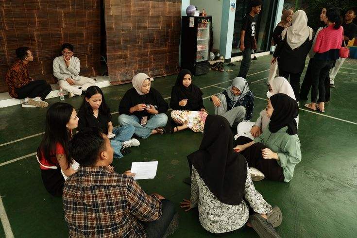

Dokumentasi Kegiatan Workshop
Berikut adalah dokumentasi foto dan video dari pelaksanaan kegiatan workshop sebelumnya.
Galeri Foto
Foto 1: Suasana Workshop.
Foto 2: Sesi Diskusi Peserta.

Universitas Pamulang Kampus Serang
Berikut adalah dokumentasi foto dan video dari pelaksanaan kegiatan workshop sebelumnya.
Foto 1: Suasana Workshop.
Foto 2: Sesi Diskusi Peserta.
